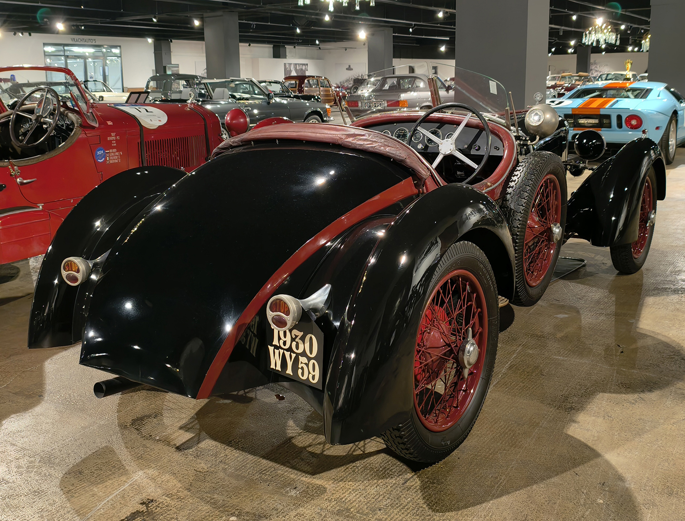

License Plates of France (FR)
Photographed in The Netherlands


Normal from 1950 to 2009. 67 = Bas-Rhin. White rear plates optional since 2007. Euroband optional since 1993 and mandatory since 2004.


Normal from 1950 to 2009. 85 = Vendée. Yellow rear plates mandatory 1993-2007. Euroband optional since 1993 and mandatory since 2004.


Normal from 1950 to 2009. 11 = Aude. This plate is either fake or deregistered.


Normal from 1950 to 2009. 03 = Allier. This plate is either fake or deregistered.


Normal from 1950 to 2009. 13 = Bouches-du-Rhône.


Normal from 1950 to 2009. 83 = Var.


Normal from 1950 to 2009. 59 = Nord.


Normal from 1901-1928. S = Saint-Étienne.


Normal from 1928-1950. HX = Loir-et-Cher.


Temporary series since 2004. WW = Temporary. 59 = Nord.